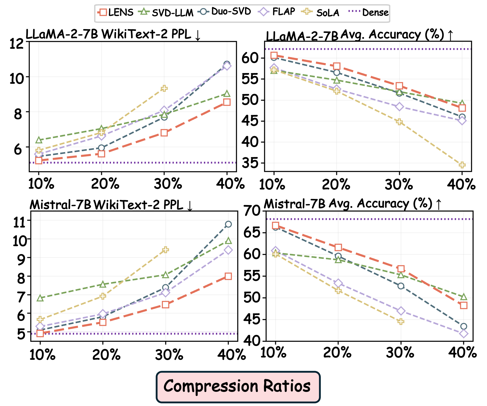
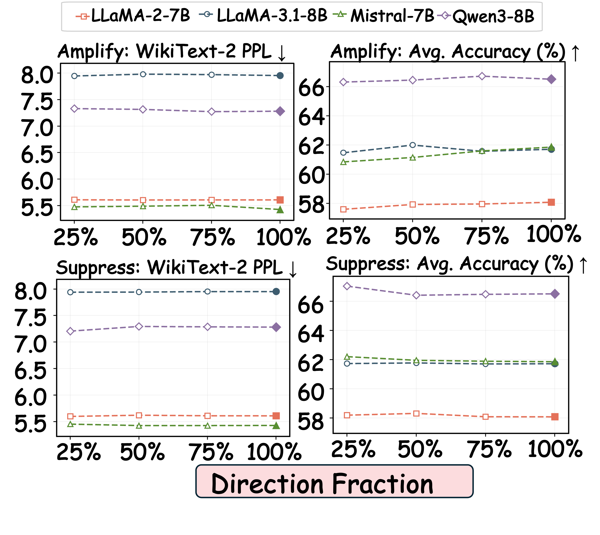
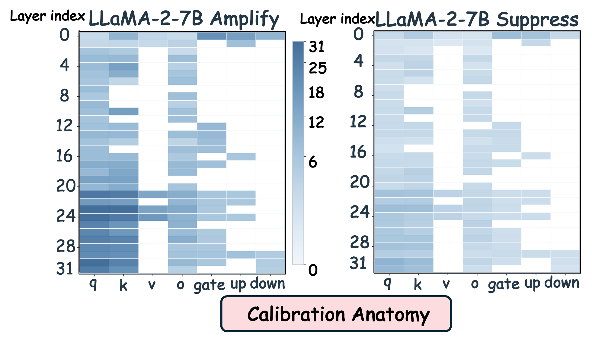
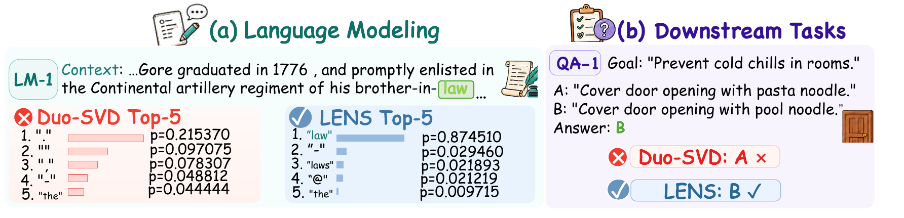

What survives
Compression fixes a compact retained representation under a strict parameter budget.
LENS · ICLR 2027 submission · LLM compression
Loss-Aligned Directional Salience Calibration for LLM Compression
A post-compression calibration framework that recalibrates the directional contributions already retained by compression, without changing the compressed structure or inference cost.
01 / Overview
Low-rank compression decides which directions survive. LENS asks the missing question: should each retained direction contribute more, less, or not at all to the language-modeling objective?

Compression fixes a compact retained representation under a strict parameter budget.
The same subspace can contain directions with distinct, even opposing, loss responses.
Directional gain is aligned to loss, then folded back into the fixed low-rank factors.
02 / Method
LENS identifies reliable loss-aligned directions in the retained low-rank space, estimates their relative gains, and folds accepted calibration back into the compressed operator without changing its rank or structure.
LENS updates only U. The calibrated gain is folded offline into the output factor; rank, V, preserved columns, and inference cost stay fixed.
The final LENS pipeline figure will be placed here without changing this layout.
Calibration protocol
LENS uses separated calibration evidence for each decision stage, while WikiText-2 Test and downstream benchmarks remain untouched until final evaluation.
Build the response eigenbasis within the retained subspace.
Estimate held-out directional responses and retain sign-consistent directions.
Choose the shared feasible scale using paired NLL.
Accept the update only when the held-out mean and 95% upper bound both improve.
03 / Main Results
We compare LENS with the complete set of baselines reported in Table 1 at a unified 20% compression ratio. Select a backbone to inspect its full language-modeling and downstream evaluation results.
Active backbone
| Method | PPL ↓ | Avg. ↑ | MMLU ↑ | PIQA ↑ | WinoG. ↑ | HellaS. ↑ | ARC-e ↑ | ARC-c ↑ | OBQA ↑ |
|---|
Dense is shown as an uncompressed reference and is excluded from the color ranking. Each metric column compares the eight compressed methods. The best value highlights when the table enters view or a backbone is selected, then clears when you leave this section.
04 / Ablation Study
We isolate the roles of Amplify and Suppress and examine whether stage ordering and state-adaptive reprofiling matter. Select a backbone to compare the calibration variants under the same compression setting.
Active backbone
| Variant | Calibration design | PPL ↓ | Avg. ↑ |
|---|
Increase the contribution of validated amplification-favored directions.
Recompute directional responses at the updated model state.
Reduce the contribution of validated suppression-favored directions.
05 / Robustness & Generalization
We test whether loss-aligned calibration remains useful beyond its default setting: across compression budgets, calibration data, alternative low-rank compressors, and subsequent 4-bit quantization.
Active experiment
Does LENS remain effective as compression becomes increasingly aggressive?
Compare compressors

Takeaway The advantage persists from 10% to 40% compression.
06 / Analysis
We separate sensitivity from internal behavior: first, whether choices need narrow tuning; then, how calibration is distributed across layers and module families.
Sensitivity analysis
Inspect the validated direction fraction and global calibration scale independently.
Switch sensitivity view
How sensitive is LENS to the fraction of validated directions retained?

Takeaway Performance varies only mildly across direction fractions.
Calibration anatomy
LENS distributes different correction strengths across layers and module families, with distinct patterns for Amplify and the later Suppress stage.

Takeaway Amplify produces broader corrections; the subsequent Suppress stage is more selective.
07 / Prediction Recovery
LENS can recover correct next-token predictions and downstream answers that are lost after low-rank compression.

Representative examples Language-modeling and downstream recovery examples.
08 / Resources
The released repository provides the core LENS implementation and the reproduction pipeline for the main results.
Citation
@article{lens2027,
title = {What Survives Is Not Enough: Loss-Aligned Directional Salience Calibration for LLM Compression},
author = {Anonymous Authors},
journal = {ICLR 2027 submission},
year = {2027}
}